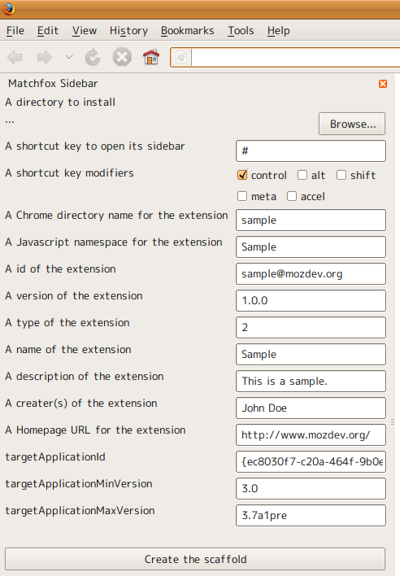

Firefox拡張を作りたいけど、ややこしくて手がつけられない、そんなあなたに・・・！
Ruby on Rails みたいに、scaffold(骨組み)を作ってくれます。
この骨組みには、はてなブックマーク拡張から取り出したエッセンスが入っていて、
その道のプロフェッショナルと同じスタートラインから開発できます。
インストールしたら、Matchfoxサイドバー(Ctrl+!)を開きます。

骨組みの、"インストール先のディレクトリ"を"参照..."します。
新しいフォルダの作成(M)で、"sample@mozdev.org"というちょっと変な名前のフォルダを作ります。 OKをクリックします。

最後に、一番下の"骨組みを作る"を押します。
なぜサイドバーがキットに入っているのかというと、サイドバーはパカパカするだけでリロードできて
プログラムの確認が楽なんで、はじめのうちはサイドバーで動くものを作るのがおすすめだからです。
おまけで、アドオンの"設定"から"開発者におすすめの設定"ができます。

function hello() { var strings = new Strings("chrome://sample/locale/sidebar.properties"); alert(strings.get("hello")); }
hello = hello,world.
hello = こんにちは、世界。
function: Strings aPropertiesFile 新しいインスタンスを作ります。 aPropertiesFile StringBundleに使うpropertiesファイルのURI。文字列。 function: get aName &optional aArgs ローカライズ文字列を取得します。 aName 項目名。文字列。 aArgs printfのような文字列フォーマットに渡す引数。文字列の配列。
// Bookmarkモデルを生成。 var Bookmark = Entity({ name : 'bookmarks', fields : { id : 'INTEGER PRIMARY KEY', url : 'TEXT UNIQUE NOT NULL', title : 'TEXT', date : 'TIMESTAMP NOT NULL', last_visited : 'TIMESTAMP', comment : 'TEXT', } }) // データベースのファイル("ProfD/hogehoge/hogehoge.sqlite")を取得。 function dbFile() { var pd = DirectoryService.get("ProfD", Ci.nsIFile); pd.append("hogehoge"); if (!pd.exists() || !pd.isDirectory()) { pd.create(Ci.nsIFile.DIRECTORY_TYPE, 0755); } pd.append("hogehoge.sqlite"); return pd; } // Databaseインスタンスを生成 var db = new Database(dbFile()); // BookmarkモデルにDatabaseインスタンスをセット Bookmark.db = db; // Bookmarkモデルを初期化 Bookmark.initialize(); ... //Bookmark.insert 作成、 //Bookmark.find 検索、 //Bookmark.update 更新、 //Bookmark.deleteById 削除、などなど ... // データベースを閉じる db.close();
TIMESTAMP型を指定すると、JavascriptのDateオブジェクトを透過的に読み書きできます。
(SQLiteには日付型がないので実際にはINTEGER型で"Date.getTime()の値"をデータベースに保存しています)
同様に、LIST型を指定すると、JavascriptのArrayオブジェクトを透過的に読み書きできます。
(実際にはTEXT型で"Arrayから作ったCSV的な文字列"を保存しています。)
モデルのFooやBarの値で、検索やカウントができます。これは__noSuchMethod__をフックして実現してます。
function: Database aFile Databaseのインスタンスを生成します。 aFile SQLiteのデータベースファイルの場所。nsIFlieのインスタンス。 getter: version データベースのバージョンを取得します。 PRAGMAのuser_versionに相当します(schema_versionではない)。 setter: version データベースのバージョンを設定します。 function: getPragma aName PRAGMAの値を取得します。 aName PRAGMAの名前。文字列。 function: setPragma aName aVal PRAGMAの値を設定します。 aName PRAGMAの名前。文字列。 aVal 設定する値。文字列。 function: createStatement aSQL ステートメントを生成します。mozIStorageStatementWrapperを返します。 aSQL SQL文。文字列。 function: bindParams aWrapper aParams ステートメントにパラメーターをバインドします。バインドしたステートメントをmozIStorageStatementWrapperで返します。 aWrapper ステートメント。mozIStorageStatementWrapperのインスタンス。 aParams パラメーター。 Objectの場合、名前付きパラメーターとみなします。 Arrayの場合、出現順に先頭からバインドします。 単値の場合、先頭のパラメーターにバインドします。 nullの場合、処理を行いません。 function: getParamNames aWrapper ステートメント内に含まれる名前付きパラメーターのリストを、配列で返します。 aWrapper ステートメント。mozIStorageStatementWrapperのインスタンス。 function: getColumnNames aStatement ステートメントの列名のリストを、配列で返します。 aStatement ステートメント。mozIStorageStatementかmozIStorageStatementWrapperのインスタンス。 function: getRow aRow aColumnNames テーブル行をオブジェクトに変換したものを返します。 aRow テーブル行。mozIStorageStatementRowのインスタンス。 aColumnNames 列名のリスト。配列。 function: execute aSQL aParams SQLを実行します。DDL/DML共に利用できます。 aSQL SQL文。文字列かmozIStorageStatementWrapper。 aParams SQL文のパラメータ。オブジェクトか配列か文字列。bindParamsと同じです。 function: transaction aProc トランザクション内で処理を実行します。 パフォーマンスを考慮する必要のある一括追加部分などで用います。 例外が発生した場合は、トランザクションがロールバックします。 それ以外は、自動的にコミットします。 既にトランザクションが始まっていたら新たなトランザクションは開始しません。 aProc 実行する処理。引数なしの関数。 function: beginTransaction トランザクションを開始します。 トランザクションが既に開始していた場合でも、例外を発生しません。 function: commitTransaction トランザクションをコミットします。 トランザクションが開始していない場合でも、例外を発生しません。 function: rollbackTransaction トランザクションをロールバックします。 トランザクションが開始していない場合でも、例外を発生しません。 function: throwException aError データベースの例外を解釈し再発生します。 aError データベースの例外。 function: close データベースを閉じます。 閉じないと、ファイルがロックし削除できません。 function: tableExists aName テーブルが存在するかを確認します。 aName テーブル名。文字列。 function: vacuum データベースの無駄な領域を除去します。
function: save Modelをデータベースに保存します。初回はinsert、次からはupdateで保存します。 特にinsert時には、Modelにidを割り振ります。 function: remove Modelをデータベースから削除します。内部的にはdeleteByIdです。 property: definitions ModelのEntityの定義を示したオブジェクトです。 function: initialize テーブルをCREATEします。内部的には以下のSQLを実行します。 CREATE TABLE IF NOT EXISTS {def.name} ( {def.fields.join(', ')} ) function: deinitialize テーブルをDROPします。内部的には以下のSQLを実行します。 DROP TABLE {def.name} function: insert ModelをINSERTします。内部的には以下のSQLを実行します。 INSERT INTO {def.name} ( {fields.join(', ')} ) VALUES ( {params.join(', ')} ) function: update ModelをUPDATEします。内部的には以下のSQLを実行します。 UPDATE {def.name} SET {fields} WHERE id = :id function: deleteById aId ModelをIDでDELETEします。内部的には以下のSQLを実行します。 aId ModelのID。整数。 DELETE FROM {def.name} WHERE id = :id function: deleteAll Modelを全てDELETEします。内部的には以下のSQLを実行します。 DELETE FROM {def.name} function: countAll Modelの数をカウントします。内部的には以下のSQLを実行します。 SELECT count(*) AS count FROM {def.name} function: findAll Modelを全て検索します。内部的には以下のSQLを実行します。 SELECT * FROM {def.name} function: findFirst aParams ModelをパラメータでLIMIT 1で検索します。内部的には以下のSQLを実行します。 aParams パラメータ。Database.executeと同様。 SELECT * FROM {def.name} ...aParamsの内容... LIMIT 1 OFFSET 0 function: find aSQL aParams Modelをパラメータで検索します。 aSQL オブジェクトかmozIStorageStatementWrapperのインスタンス。 aParams パラメータ。Database.executeと同様。 aParamsがnullで、aSQLがオブジェクトで、aSQL.whereが文字列のとき、内部的には以下のSQLを実行します。 SELECT * FROM {def.name} WHERE {sql.where} aParamsがnullで、aSQLがオブジェクトのとき、内部的には以下のSQLを実行します。 SELECT * FROM {def.name} それ以外のとき、内部的にはDatabase.executeを実行します。 Model.db.execute(sql, params).map(Model.rowToObject); function: findByFoo aFoo function: findByFooAndBarAnd... aFoo aBar ... ModelをFooやBarの値で検索します。__noSuchMethod__をフックして実現しています。 内部的には以下のSQLを実行します。 SELECT * FROM {def.name} WHERE foo = aFoo and bar = aBar and ... function: countByFoo aFoo function: countByFooAndBar... aFoo aBar ... ModelをFooやBarの値でカウントします。__noSuchMethod__をフックして実現しています。 内部的には以下のSQLを実行します。 SELECT count(id) AS count FROM {def.name} WHERE foo = aFoo and bar = aBar and ... function: rowToObject aObject オブジェクトからModelのインスタンスを生成します。ただし、saveのときupdateが動きます。 aObject Entityの定義に沿った内容のオブジェクト。
function: Entity aDefinition エンティティ定義に沿ったModelのインスタンスを生成します。 aDefinition エンティティ定義を示したオブジェクト。 (nameプロパティでテーブル名、fieldsプロパティで、エンティティ名と型の対応。) 例. var Bookmark = Entity({ name : 'bookmarks', fields : { id : 'INTEGER PRIMARY KEY', url : 'TEXT UNIQUE NOT NULL', title : 'TEXT', date : 'TIMESTAMP NOT NULL', last_visited : 'TIMESTAMP', comment : 'TEXT', } }) function: createWhereClause aFields WHERE節を示した文字列を作ります。 aFields WHEREするパラメータ名をリストにした配列。 function: createInitializeSQL aDefinition CREATE TABLE IF NOT EXISTS...文を示した文字列を作ります。 aDefinition エンティティ定義を示したオブジェクト。Entityのものと同様。 function: createInsertSQL aDefinition INSERT INTO...文を示した文字列を作ります。 aDefinition エンティティ定義を示したオブジェクト。Entityのものと同様。 function: createUpdateSQL aDefinition UPDATE ... 文を示した文字列を作ります。 aDefinition エンティティ定義を示したオブジェクト。Entityのものと同様。 function: compactSQL aSQL SQL文から不要な空白などを取り除き短く整形したSQL文の文字列を作ります。 表記のぶれを無くし、解析後の文のキャッシュヒットを増やす目的があります。 aSQL SQL文の文字列。
"ブランチ"にまとめるように心がけましょう。
例えば拡張で使う項目名には"extensions."ブランチを使いましょう。
"javascript.options.strict"オプションを扱う
1. ライブラリを new する。
//ブランチを指定します。ピリオドで終わるのがポイント。 var prefs = new Prefs("javascript.options.");
2. trueにする
prefs.set("strict", true);
3. 取得する
var v = prefs.get("strict");
項目の型はライブラリが自動で判断してくれます(手動で指定もできます)。
function: Prefs aBranchName 新しいインスタンスを作ります。 aBranchName ブランチ名。文字列。ブランチ名はピリオドで終わる必要があります。 function: get aPrefName &optional aDefaultValue aType 項目の値を取得します。 aPrefName 項目名。文字列。 aDefaultValue 取得に失敗したとき返す値。 aType 項目の型。文字列。下表1参照。 function: set aPrefName aValue &optional aType aRelFileRelativeToKey 項目の値をセットします。 aPrefName 項目名。文字列。 aValue セットする値。 aType 項目の型。文字列。下表2参照。 aRelFileRelativeToKey 相対ファイルパスの元ディレクトリ。"ProfD"など。文字列。 function: clear aPrefName 項目を削除します。 aPrefName 項目名。文字列。 function: getChildList &optional aStartingAt ブランチ以下の項目名たちを配列で返します。 aStartingAt ブランチ名。文字列。
表1(getのaType)
| 型 | aType | 動作 |
|---|---|---|
| 真偽値 | "boolean" | getBoolPref(aPrefName) |
| 整数 | "integer" | getIntPref(aPrefName) |
| 文字列 | "string" | getComplexValue(aPrefName, Ci.nsISupportsString).data |
| 地域化文字列 | "localized" | getComplexValue(aPrefName, Ci.nsIPrefLocalizedString).data |
| 絶対ファイルパス | "file" | getComplexValue(aPrefName, Ci.nsILocalFile) |
| 相対ファイルパス | "relFile" | getComplexValue(aPrefName, Ci.nsIRelativeFilePref) |
表2(setのaType)
| 型 | aType | 動作 |
|---|---|---|
| 真偽値 | "boolean" | setBoolPref(aPrefName, !!aValue) |
| 整数 | "integer" | setIntPref(aPrefName, +aValue) |
| 文字列 | "string" | setComplexValue(aPrefName, Ci.nsISupportsString, nsISupportsStringのインスタンス) |
| 地域化文字列 | "localized" | setComplexValue(aPrefName, Ci.nsIPrefLocalizedString, nsIPrefLocalizedStringのインスタンス |
| 絶対ファイルパス | "file" | setComplexValue(aPrefName, Ci.nsILocalFile, aValue) |
| 相対ファイルパス | "relFile" | setComplexValue(aPrefName, Ci.nsIRelativeFilePref, nsIRelativeFilePrefのインスタンス) |
相対ファイルパスについてはFile I/O - MDC参照。